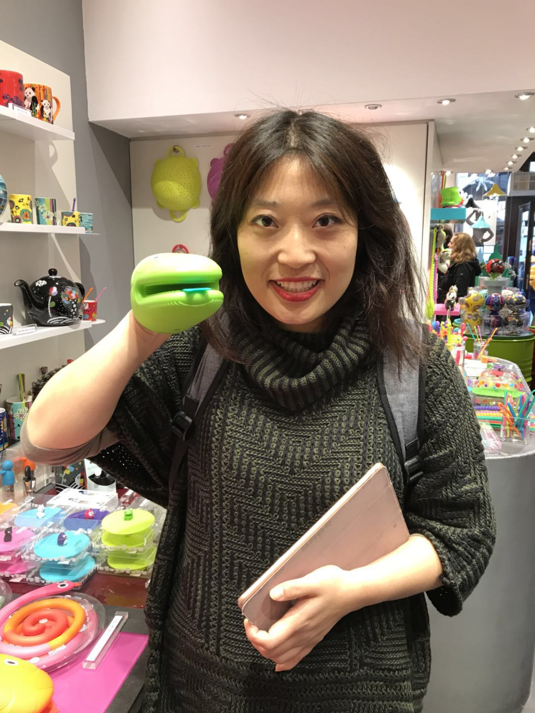

Machine learning engineer and fifth-year PhD candidate at Missouri University of Science and Technology, advised by Dr. Yanzhi Zhang. With 5+ years of experience across industry and research, I build ML systems spanning credit risk modeling, scientific machine learning, and LLM agent workflows. My research sits at the intersection of deep learning and computational mathematics, with applications in scientific simulation and digital twins.